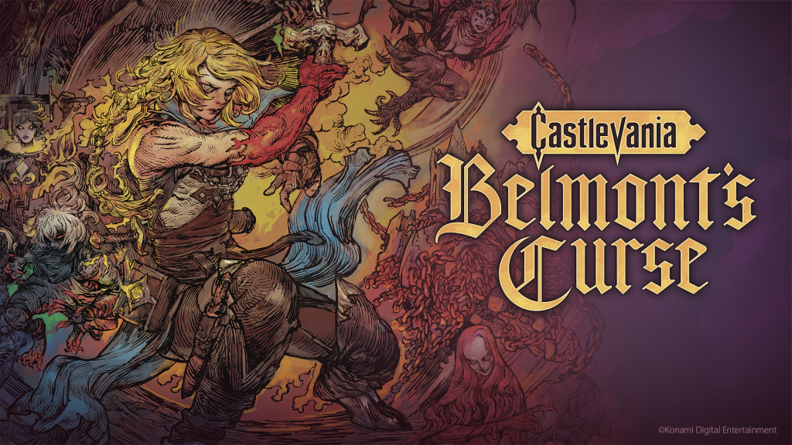
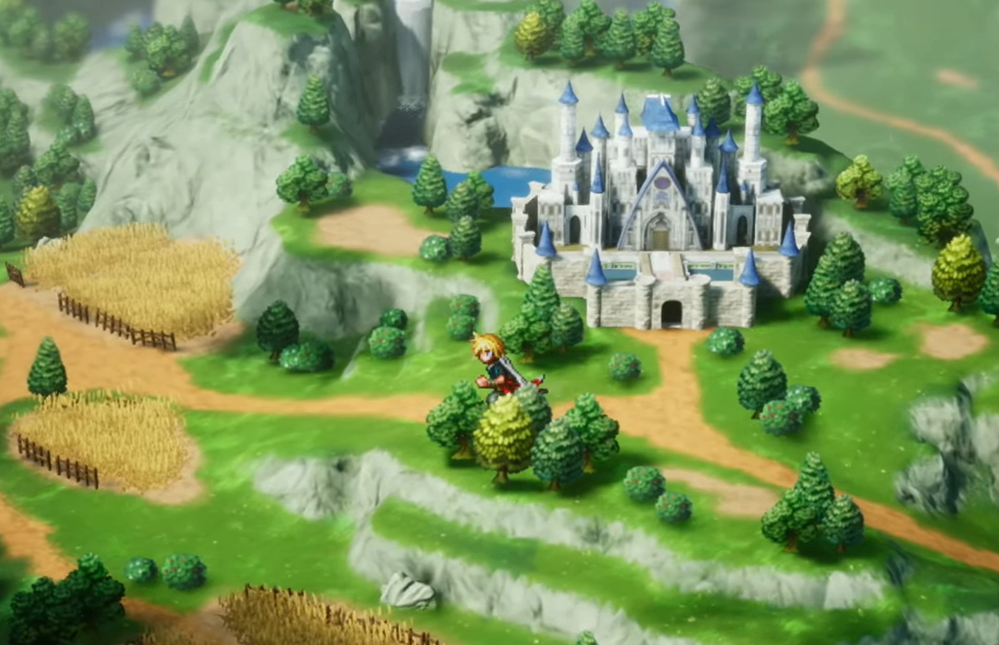
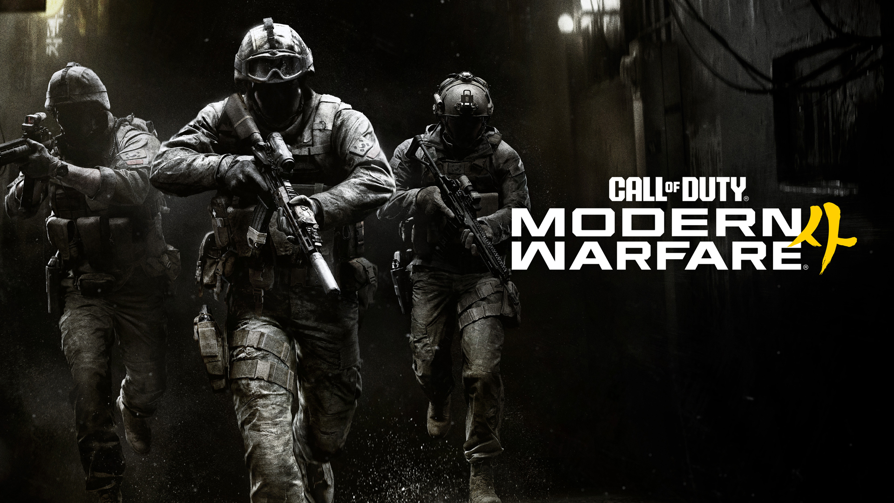

Octubre de 2026: el mes de Gears, Castlevania y Call of Duty antes de que llegue GTA VI
Las editoras llenaron octubre para no competir con Rockstar en noviembre. Estos son los lanzamientos que importan, fecha por fecha.

Por qué octubre viene tan cargado
Grand Theft Auto VI sale el 19 de noviembre, y casi nadie quiere lanzar un juego grande la misma semana. El resultado es un octubre muy apretado. En apenas tres semanas coinciden el regreso de Gears of War, un Castlevania nuevo, el primer Final Fantasy en HD-2D y el Call of Duty de cada año.
Los cinco que hay que mirar
Ace Combat 8: Wings of Theve — 2 de octubre
Sale hoy en PS5, Xbox Series X|S y PC, después de un acceso anticipado que empezó el 28 de septiembre para la edición Deluxe. Llega con muy buenas reseñas: ronda los 88 puntos en Metacritic y es la entrega de la saga mejor valorada en 25 años. Lo analizo más a fondo en el resumen de la crítica de septiembre.

Gears of War: E-Day — 6 de octubre
The Coalition vuelve 14 años antes del primer juego, al Día de la Emergencia, con Marcus Fenix y Dom Santiago como protagonistas. Funciona en Unreal Engine 5 y ofrece 4K a hasta 60 fps tanto en campaña como en multijugador. Además, amplía la destrucción del escenario. Trae cooperativo para cuatro jugadores en línea y pantalla dividida en consola. También estrena Horde Siege, un modo cooperativo para doce jugadores. Sale en Xbox Series X|S, PC y Steam, y entra en Game Pass desde el primer día. Quienes compraron la edición Premium juegan desde el 1 de octubre.
Castlevania: Belmont's Curse — 15 de octubre
Konami sigue sacando sus sagas clásicas del archivo. Esta vez es un Castlevania nuevo para PS5, Xbox Series X|S, PC y Switch, con una Midnight Edition y una demo ya disponible.

Final Fantasy Resonance — 22 de octubre
Es el primer Final Fantasy en HD-2D, el estilo de Octopath Traveler. Adapta el primer arco argumental de Final Fantasy: Brave Exvius, un juego de móvil, y lo rehace como un RPG de consola con combate por turnos. Habrá cameos de Cloud, Tidus y el Guerrero de la Luz. Cuesta 49,99 dólares y sale en PS5, Xbox, Switch, Switch 2 y PC. La demo del capítulo 1 está disponible desde septiembre y la partida se puede pasar al juego completo.

Call of Duty: Modern Warfare 4 — 23 de octubre
Es la entrega anual de Activision y llega también a Switch 2. Quienes lo reserven pueden empezar la campaña una semana antes, el 16 de octubre.

Octubre es el último mes en el que un estreno grande puede tener la atención del público solo para él antes de GTA VI.
Calendario completo
| 1 oct | Rayman Origins: Enhanced Edition · Dynasty Warriors 3: Complete Edition Remastered · Ghost of Yōtei: Complete Edition (PS5) |
|---|---|
| 2 oct | Ace Combat 8: Wings of Theve (PS5, Xbox, PC) |
| 6 oct | Gears of War: E-Day (Xbox, PC) · Game Pass |
| 8 oct | Kingdom Hearts Collection (PS5, Xbox, PC, Switch 2) |
| 9 oct | Dragon's Dogma 2: Dark Arisen (PC, PS5, Xbox, Switch 2) |
| 13 oct | Planet Zoo 2 (PC, PS5, Xbox) · Valor Mortis (PC, PS5, Xbox) |
| 15 oct | Castlevania: Belmont's Curse (PC, PS5, Xbox, Switch) |
| 22 oct | Final Fantasy Resonance (PC, PS5, Xbox, Switch, Switch 2) |
| 23 oct | Call of Duty: Modern Warfare 4 (PC, PS5, Xbox, Switch 2) |
Fechas vigentes al 2 de octubre de 2026. Pueden cambiar.